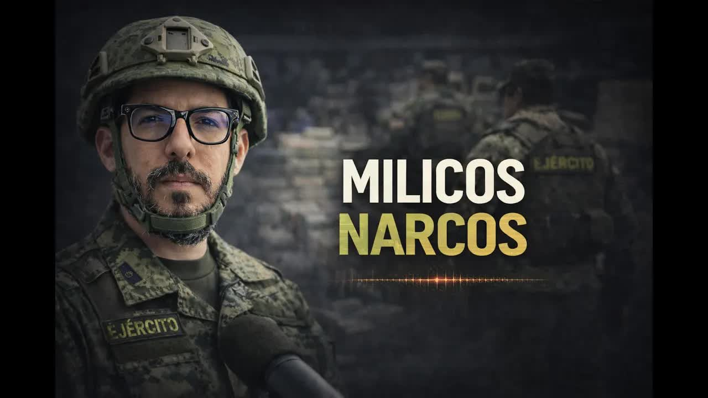
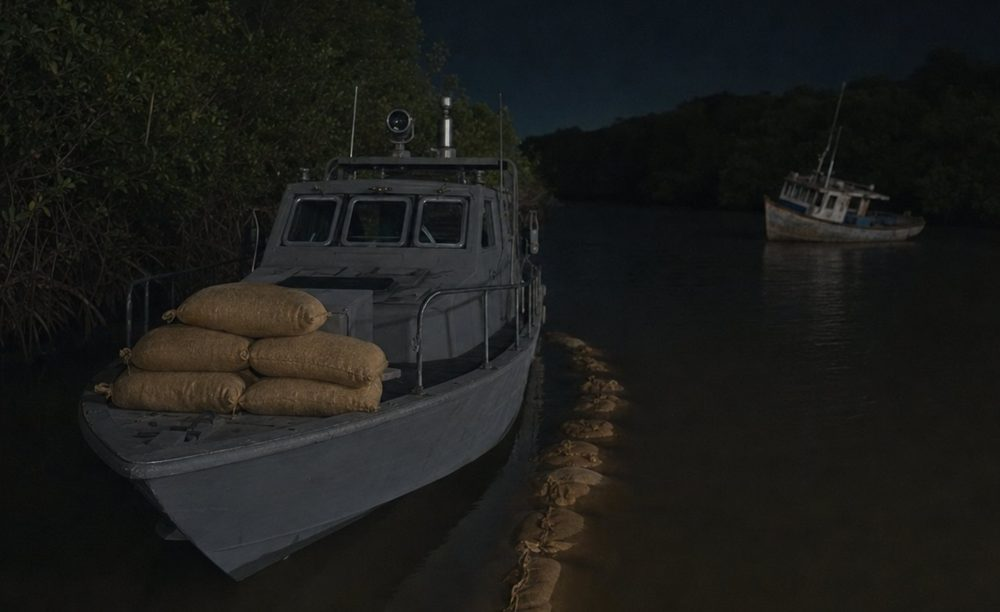
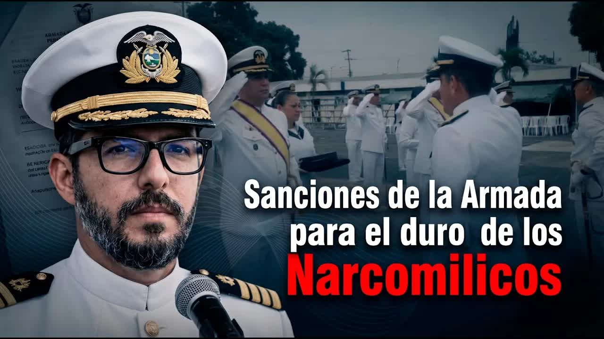
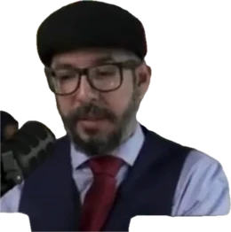
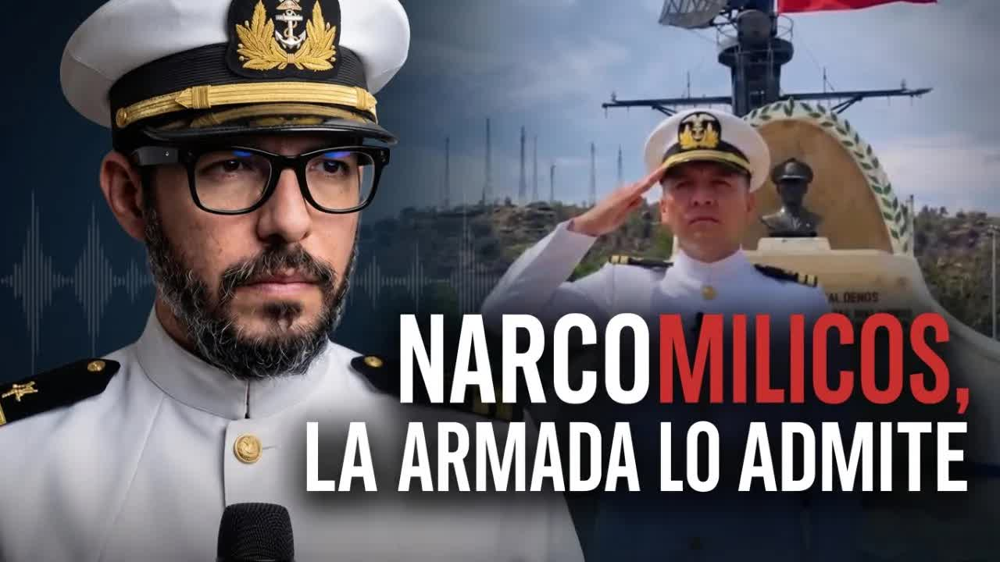

Feb 13, 2026 · The exposé: the sources, Gallegos's photo and the audio of the split
On the night of January 22, 2026, a Navy speedboat set out for La Conchita island, in the Gulf of Guayaquil, with four hooded men on board. The Navy reported five sacks of cocaine and requested a commendation for 33 personnel. Two of the sailors who took part told Andersson Boscán a different story: there were more than twenty sacks, they took eighteen to sell to the cartels, and then the money was never shared out. An audio recording of the fight over the split proved it. The Navy's Inspector General's Office investigated, concluded that its sailors had staged an anti-drug operation and called for the maximum penalty against the commander who led it.


In the last days of January 2026 it made the news. During a river patrol 40 minutes from Guayaquil, Task Force 31 South found at night, on La Conchita island, a hard-to-reach mangrove area, two boats loaded with drugs and fuel, presumably used to contaminate merchant ships. In one of them were five sacks of cocaine, about 250 kilos. TC Televisión reported it; it ran in Expreso and El Universo; the Ecuadorian Navy announced it as another major seizure in a country overrun by drug trafficking. There were congratulations.
The strange part came later. First, people from the criminal world contacted Andersson Boscán, saying they had made a deal with the military over that seizure; he ignored them. Then two servicemen wrote to him: we took part in that drug seizure, and it was not a seizure, it was a theft. They sent photos and short videos recorded that night, the boat, the location, the landing on La Conchita, and said they had longer videos to hand over to the justice system.
The story they told was different. The Armed Forces and the police have informants inside organized crime groups. One of them reported that there was almost a ton of drugs in the water, in Guayaquil, in a boat that was tied up and covered. Instead of reporting it to the police and to the officer corps, the officers put together an unofficial operation using state resources: boats, weapons and uniforms. They picked people up at the Portete bridge headed for La Conchita. Since it was a water operation, they called in Navy personnel; since the source belonged to the police officer, the anti-narcotics officer went along; and in case there was shooting, members of organized crime came too. Boscán counted thirteen people.
The plan was to report part of it and keep the rest. Not out of carelessness: because by using state resources they had to justify the deployment, and if they reported nothing, anyone who talked could put them in prison. They reported five sacks. According to those involved, there were supposed to be more than twenty. They took eighteen. At 1,000 to 1,200 dollars per kilo, about 900,000 dollars; split twelve ways, about 90,000 each. They said they do this roughly once every three months: find a shipment, take 70 or 80 percent, sell it to cartel operatives and report a tiny fraction to their superiors, the press and the justice system.
There was no military operation, but a clandestine one. The servicemen decided to be drug traffickers.
Andersson Boscán, February 13, 2026
Almost a ton in the boat; five sacks were reported and eighteen taken to resell to the cartels
According to the two sailors who spoke with BoscánWhat each one was owed; the two who set up the operation kept everything, which is why the others talked
Twelve participants, according to the sourcesBetween 1,000 and 1,200 dollars per kilo, sold to the same cartels they steal it from
Price cited by those involvedAbout 250 kilos handed over as a seizure; the Navy cannot guarantee it is what was found
Official report of Task Force 31 SouthThey keep 70 or 80 percent of the shipment and report a tiny fraction; they give no figures for the earlier ones
The same sailors, to BoscánThe sailors spoke out for one reason: after stealing the drugs, there was no split. The two men who set up the operation decided to keep everything. One of them is a police corporal, Franklin Gallegos, the man who had the contact with the informant, who knew where the drugs were, whose they were and where they were going to be dropped off. Boscán showed his photo and said he had his police ID number. He knows because Gallegos's partners recorded him: a call of 15 to 20 minutes, made the day after the staged operation, in which a sailor demands the money.

In the recording, Gallegos asks for calm: the drugs have just been delivered, they have to wait a day or two for the buyers to sort it out. The sailor explains the problem: the source did not give it to the police officer, they went and found it; his sergeant is looking bad in front of the person who gave the information; the guys in the unit have not received anything. The police officer says he knows whose drugs those are, that he is always in that world, that he does not like a rip-off. They talk about tigueros and other groups each of them answers to. They threaten each other: one reminds the other that in uniform they feel strong, but on the street it is different; the police officer warns that he can find the owner of the drugs and tell him who stole them. And he explains why that is a real threat: on land, drug trafficking is spread among many people, but on the water the owners can be counted on the fingers of one hand. In that area of Guayaquil, according to Boscán, three groups control the water and work with the international cartels.
If I didn't tell you they're in uniform, you'd think they were narcos. These are the people who kneel and kiss Ecuador's flag.
Andersson Boscán, February 13, 2026
The original source, a junior narco who captained the boat that moved drugs out of La Conchita every week, was murdered after the operation. Boscán said he would hand the audio over to the justice system when asked, and spoke directly to the Navy: within 24 hours they can find out who carried out the operation and who reported the five sacks, and ask them where the other eighteen are.
At first everyone denied it. A serviceman appeared on camera in a hood to say it was a lie, that he had been decorated eight times and that he was hurt because a bad citizen was damaging his honor. Almost three million people watched the report, and the Navy commander acknowledged that an investigation would be opened. Prosecutors carried out raids two weeks after the exposé. Boscán expected nothing. He was wrong: on April 15, 2026, he published the report of the Navy's Inspector General's Office, 75 pages signed by Rear Admiral Carlos López Olivares, the inspector general.

The main conclusion: the sailors staged an anti-drug operation. The January 22 operation, carried out to supposedly seize 250 blocks of drugs in the Gulf of Guayaquil, had so many irregularities that the institution acknowledges it cannot guarantee that the drugs handed over to prosecutors are the same ones that were found, or that they amount to the quantity actually found. The report identifies 14 incidents and recommends disciplinary proceedings against 12 servicemen, with Commander Javier Espíndola Vázquez, a battalion commander, as the main person responsible for gross offenses, the most serious level of the military disciplinary code.
The failure to follow procedures for carrying out the chain of custody and preserving the scene made it impossible to have institutional certainty that the traceability, security and preservation of what was seized had been respected.
Report of the Navy's Inspector General's Office, read by Andersson Boscán on April 15, 2026
The findings. Espíndola took four people in civilian clothes and hoods aboard the military boat, with no operation order, no authorization from his superiors and no identification: the report says there is no formal identification of the civilian personnel on board and no references that would allow them to be identified. Espíndola stated that they were an unnamed human source and three intelligence agents; the report establishes that he is not authorized to handle closed human sources and has no role in the naval intelligence system. A single officer held the roles of commander of the task group, of the task unit, of the boats and of the patrol. His superior, the commander of the Marine Corps, stated that he learned not of the operation but of its results, at 00:23 on January 23. They operated outside their zone and without coordination; the command system was WhatsApp. No one photographed, filmed or preserved the scene.
And a fact that had not been made public: at the site of the find there was a third civilian boat, part of the evidence, which was left abandoned because it could not be towed, making it impossible to account transparently for the full find, while Espíndola had two additional tactical boats parked at the dock. The operation was planned with nine personnel and one boat; the incident report listed 17 people and three boats; the request for a formal commendation, the award they asked for in writing, included 33 personnel and four boats. Among those to be honored was Freddy Bravo Cuenca, who stated that he did not take part, had no assigned duties and was the commander's aide.
The most severe category in the military code, with at least eleven additional offenses ranging from serious to gross. The case was referred to prosecutors because of its criminal relevance.
75-page report signed by Rear Admiral Carlos López Olivares, inspector general of the Navy, published by Andersson Boscán on April 15, 2026.
The report's recommendations. Refer the case to the Attorney General's Office, because the findings have criminal, not merely administrative, relevance. For Espíndola, a disciplinary trial for a gross offense, the most severe category, with at least eleven additional offenses ranging from serious to gross: breaking the chain of custody, using unauthorized intelligence sources, skipping the briefing, carrying out an operation without authorization, operating outside his jurisdiction, taking civilians aboard without permission, failing to use the available resources, hiding the operation from his superior, reporting late, falsifying the personnel list and failing to file the completion report. A trial for a gross offense for the six crew members of the boat, Quimí, Balón, Jiménez, Mejía, Tutivén and Camba, for failing to follow or demand the chain of custody and failing to warn their commander of the risk of splitting the force; the Navy reminds them that following orders does not exempt them from responsibility.

A trial for the head of operations, Luis Zavala, who signed the order, knew about the operation and at 17:45 on January 22 went off duty, leaving the command post to a clerk corporal with no command authority. A minor offense for Ramírez and Miranda, commanders of the support boats, for sailing without lights and not knowing their mission: they stated they were just following behind. A trial for the second-in-command, Guillermo Ortega, who drew up the commendation request with personnel who did not take part, classified as lying in service matters. And two new rules: any human source in this type of operation will be handled only by formal intelligence agencies, and taking unidentified personnel aboard is prohibited.
The Navy sent the report to Boscán and referred it to the Attorney General's Office, which according to him had already opened a case. The 18 sacks never turned up. The four hooded men were not identified. Corporal Franklin Gallegos, identified by name, photo and audio on February 13, faced no known consequences in the videos. Boscán, who in February had said institutions look the other way, closed in April with a different line: sometimes, only sometimes, an institution, instead of protecting the narcos, puts them through interrogations and lays them bare in a report.
They're not looking for drugs to seize them, they're looking for drugs to steal and sell, and sell to the competition, at that.
Andersson Boscán, April 15, 2026
Updated September 5, 2026
At night, toward La Conchita island, in the Gulf of Guayaquil. Espíndola takes four hooded men aboard. At 17:45 the head of operations had gone off duty.
At 00:23 the commander of the Marine Corps learns of the results, not the operation. That day the call about the split is recorded.
TC Televisión, Expreso and El Universo report the seizure; the Navy announces it, and a commendation is requested for 33 personnel.
Boscán publishes the story of the two sailors, Corporal Gallegos's photo and the audio.
A hooded serviceman says it is a lie. The Navy commander announces an investigation.
Prosecutors carry out raids two weeks after the exposé.
In 75 pages, the Navy's Inspector General's Office concludes the operation was staged.
Boscán publishes the report. The Navy refers it to prosecutors and calls for the maximum penalty against Espíndola.
Commander and battalion commander. Led the operation, took the four hooded men aboard and held every command.
Police corporal. Had the contact with the informant; his voice is on the audio of the split.
Rear admiral, inspector general of the Navy. Signed the 75-page report.
Head of operations. Signed the order, knew about the operation and went off duty hours earlier.
Second-in-command. Drew up the commendation request with personnel who did not take part.
The commander's aide, included among those to be honored. Stated that he did not take part.
The six crew members of the boat that went to La Conchita.
Commanders of the support boats. Sailed without lights and without knowing the mission.
In February the commander acknowledged that an investigation would be opened. The Inspector General's Office concluded that the operation was staged, recommended proceedings against 12 sailors and referred the case to prosecutors.
He said it was all a lie made up by the journalist, that he had been decorated eight times and that he was hurt by the damage to his honor as the father of two young children.
That the four hooded men were an unnamed human source and three people acting as intelligence agents. The report establishes that he was not authorized to handle human sources.
He did not take part in the operation and had no assigned duties or watch; he was the commander's aide.
No response appears in the videos.

The seizure reported on the night of January 22, 2026, on La Conchita island: five sacks, about 250 kilos. No operation order, with four unidentified hooded civilians on board.
The five sacks the Navy handed over as the result of the operation. The institution itself later concluded that it cannot guarantee they are the drugs that were found or the real quantity.
The award request drawn up by the second-in-command. The operation was planned with nine people, and the commander's aide, included among those to be honored, stated that he did not take part.
Fifteen minutes in which a sailor demands the money from police corporal Franklin Gallegos, the man who had the contact with the informant. It is the piece that proved there was no split.
Seventy-five pages signed by Rear Admiral Carlos López Olivares. It identifies 14 irregular incidents, concludes that the operation was staged, recommends proceedings against 12 sailors and calls for the maximum penalty against Commander Javier Espíndola Vázquez.
The sources who wrote to Andersson Boscán and described the method: there were more than twenty sacks, they took eighteen and an operation like this is repeated every three months. They spoke out because the money was never shared out.
The search prosecutors carried out two weeks after the exposé, with almost no press coverage. The case file remains open and received the Navy's report in April.
Feb 13, 2026 · The exposé: the sources, Gallegos's photo and the audio of the split
Apr 15, 2026 · The report of the Navy's Inspector General's Office
Apr 15, 2026 · Full show with the segment on the case
10 piecesBoscán & La Moni · Feb 13 and Apr 15, 2026
Only the pieces cited in the shows and in the report of the Navy's Inspector General's Office are listed. The names of the murdered informant and of the two sailors who spoke out are not published.
this report. During a river patrol 40 minutes from Guayaquil, the armed forces through task force 31 South found two boats that were loaded with drugs and fuel. The operation was carried out at night on Conchita island, a hard-to-reach area, since it is in the mangroves. And through Trisa práctica, they managed to locate two boats presumab…
Read the full transcriptA few weeks ago on this show, almost two months back, I told you a story that had a big impact and that was at first denied by the people in it. As usual, when you investigate people, the normal thing is for them to come out and say, "No, it wasn't me. What that journalist says is a lie." it was the story of the narcomilicos, which is what we were calling them, probably wrongly, they're not soldiers after al…
Read the full transcriptstory. Many of us were born again in that earthquake. It's true, we were born again. What a good way to put it. Many of us were born again. Greetings from Bikini Bottom. Send a photo or no or I don't believe it. Mía is the scientist or the artist. Happy birthday. Mía is the artist. Mía is the artist. Amelí is the the scientist and Fer is the businesswoman. Each one has her her own definition. But yes, Mía is an artist and now she's in gym…
Read the full transcriptTranscripts from each show's automatic captions. They have not been corrected by hand: use them to find a phrase and jump to the exact minute in the video, not as verbatim quotes.
Prosecutors carry out a raid two weeks after the exposé, with almost no press coverage.
The Navy seeks a trial for a gross offense against Espíndola and refers the report to prosecutors.
The Progen case evidence the prosecutor locked in a drawer
2026An hour and twenty minutes to a ravine in La Vicentina, and a case file full of contradictions
2026Micaela Morales, Wendy Landa, Bryan Soria and the money of Marino's inner circle
The videos are the original shows from Andersson Boscán's channel. Quotes from the report of the Navy's Inspector General's Office are reproduced as they were read on air. Boscán announced that he would publish the full report on his social media and hand the audio over to the justice system when asked. The informant who gave the location of the drugs, captain of the boat that left La Conchita every week, was murdered after the operation. His name is not published. The two sailors who spoke with Boscán were not identified either.